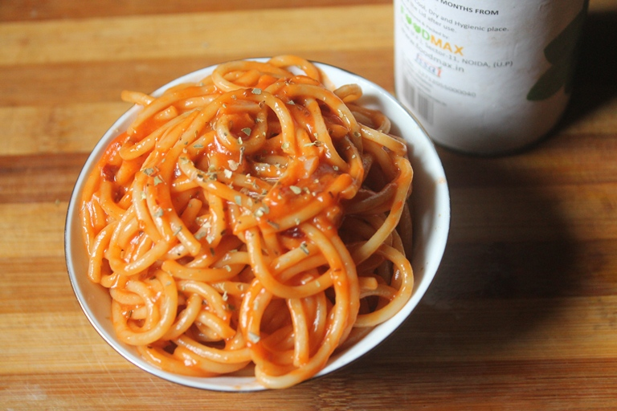

Originating from Japan, Napolitan pasta is a simple yet tasty dish. When the pantry is looking a little sparse, this recipe is a definite go-to. Alternatively known as ketchup pasta as its key ingredient.
Ingredients
Your choice of pasta or noodles
Garlic
Ketchup
Oyster sauce
Additional toppings are welcome; sausages and green onions are especially recommended.
Steps
In a pot of water, boil your choice of pasta or noodles. Mince your garlic and add to a pan with some oil.
When the garlic is browned, add the boiled pasta or noodles to the pan. Add any additional toppings.
Add equal amounts ketchup and oyster sauce, or porportion to taste. Stirfry until preferred.